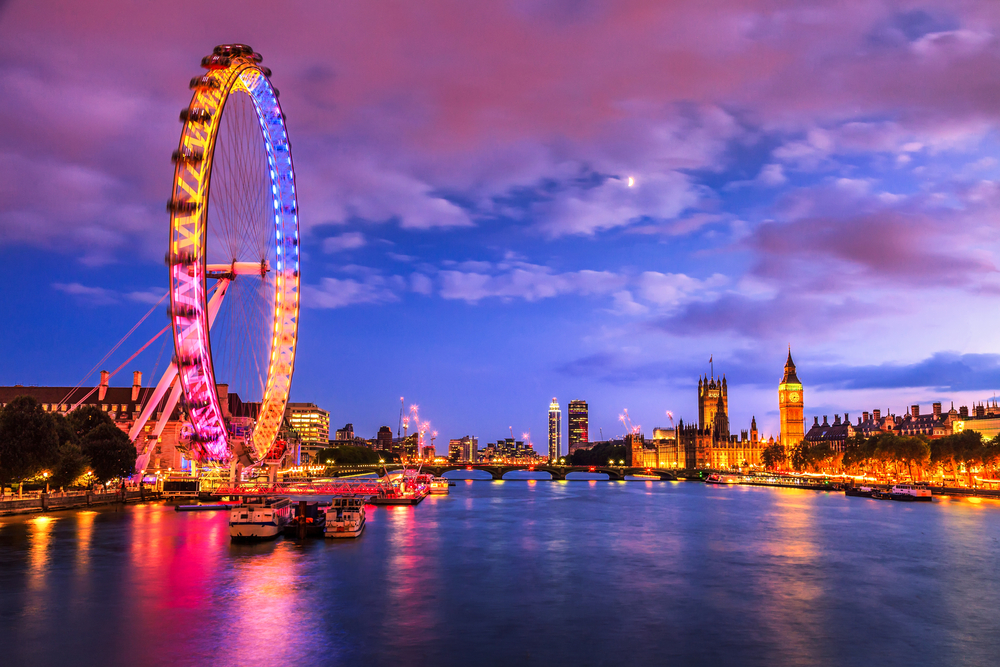
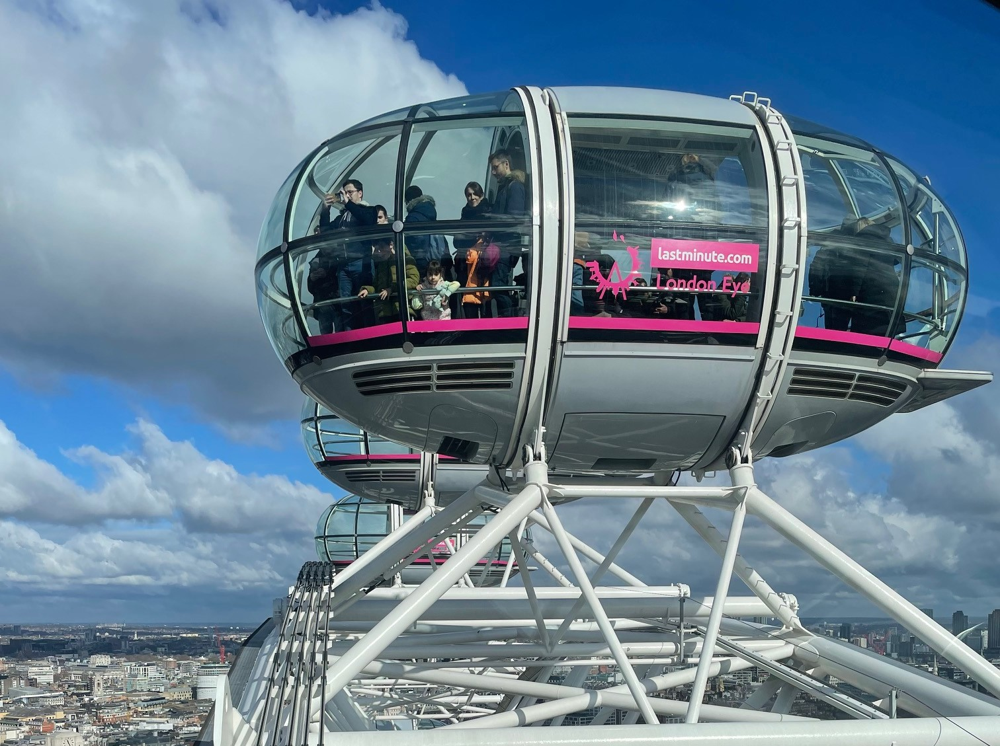
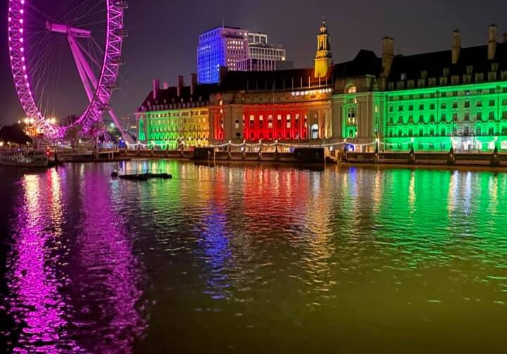

倫敦眼



地點：Riverside Building, County Hall, Westminster Bridge Rd, London SE1 7PB。 開放時間：通常為上午 11:00 至下午 6:00，週末及特定日期會延長至晚上 8:30。建議透過 官方網站 確認最新時間。 體驗時間：旋轉一圈約需 30 分鐘，整體建議預留 1 至 2 小時。 景觀：在 32 個透明座艙內可欣賞 360 度市景，晴天時能遠眺 40 公里外的溫莎城堡。熱門地標包括國會大廈、大笨鐘、白金漢宮及聖保羅大教堂。